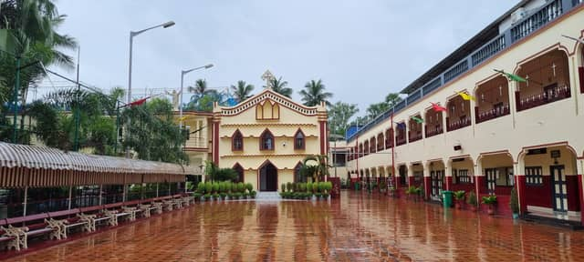

I completed both my primary and secondary education at Douglas Memorial Higher Secondary School, an institution that played a significant role in shaping my academic foundation, discipline, and approach to learning. I graduated in 2025, carrying with me not only valuable academic knowledge but also lessons in responsibility, perseverance, and personal growth.
Throughout my school years, I remained a committed, attentive, and disciplined student, consistently striving for academic excellence while maintaining good conduct. My dedication to learning, willingness to explore new concepts, and positive remarks from my teachers reflect the sincerity and enthusiasm I brought to my education.
My schooling journey laid the groundwork for my continued pursuit of knowledge and personal development. Although I have moved forward into higher education, I continue to embrace the same curiosity, dedication, and eagerness to learn that have guided me throughout my academic journey.
My school years were more than an educational experience — they were the foundation of the person and learner I continue to become.

| Board | Year Passed | Stream | Percentage Obtained |
|---|---|---|---|
| ICSE | 2023 | Science | 87% |
| ISC | 2025 | Science | 80% |